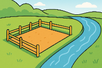
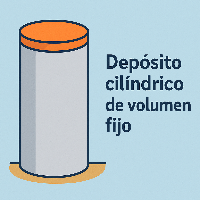
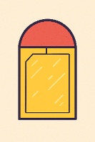
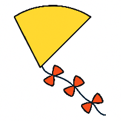
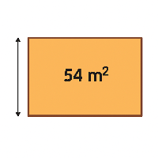

Dedicaremos esta sección exclusivamente a problemas de máximos y mínimos. Es un tipo de problemas, que ya conocéis, en los que interesa encontrar los puntos en los que determinadas funciones toman valores máximos o mínimos, y por tanto, para determinarlos se debe imponer la condición necesaria de máximo o mínimo relativo en un punto, es decir, \( f'(x) = 0 \).
En este tema, hasta ahora, habíamos resuelto este tipo de problemas en el caso en que os daban la fórmula de la función. Los que plantearemos en esta sección se presentan en forma de un enunciado, del cual se debe extraer la función que nos servirá para determinar los máximos o mínimos.
Al principio os parecerán problemas difíciles de abordar, pero existen procedimientos sistemáticos para resolverlos, y después de adquirir un poco de práctica la dificultad es mucho menor que la que aparenta. Es por esta razón que les hemos dedicado especialmente una sección de este tema.
Recinto rectangular con 100 m de alambrada
Un hombre tiene 100 m de alambrada para cerrar tres lados de un terreno rectangular cuyo cuarto lado es un río. Encuentra cómo debe hacerlo si quiere que la superficie delimitada sea máxima.

1. Lee cuidadosamente el enunciado del problema y pregúntate:
a) ¿qué te piden?
b) ¿qué datos te dan?
Primer acercamiento al problema
En el problema planteado, lo que te piden son las dimensiones que debe tener el rectángulo para que la superficie delimitada sea máxima.
Como datos te dan la suma de las longitudes de los tres lados que no son el río.
2. Identifica las variables y asigna una letra a cada una. Puedes ilustrar el problema con una figura si es necesario.
Identificación de las variables
Las variables son: por una parte la superficie del terreno, que indicaremos por \(S\); por otra, la anchura y la longitud, que indicaremos por \(x\) e \(y\).
3. Busca la magnitud que debe hacerse máxima o mínima y exprésala en función de tantas variables como sea necesario.
Identificación de la función a optimizar (función objetivo)
\( S = x \cdot y \)
4. Determina las relaciones que pueda haber entre estas variables. Se necesitan tantas relaciones como variables menos una.
Buscando relaciones entre variables (restricciones)
\( 100 = 2x + y \)
5. Usando las relaciones anteriores, expresa la magnitud que debe hacerse máxima o mínima en función de una sola variable.
Ten en cuenta que, según la variable que escojas, el cálculo posterior puede ser sencillo o complicarse.
Reduciendo el número de variables
Tenemos:
\( S = x \cdot y \)
\( 100 = 2x + y \)
Elegimos \(x\) como variable independiente porque la relación queda simple:
\( y = 100 - 2x \)
Sustituyendo:
\( S = x(100 - 2x) = 100x - 2x^2 \)
6. Busca el máximo o mínimo de la función que hayas determinado.
Elimina los valores que no tengan sentido en el problema (distancias negativas, etc.).
Calculando los extremos
A través de la derivada:
\( S' = 100 - 4x \)
\( 100 - 4x = 0 \Rightarrow x = 25\, ext{m} \)
O usando el vértice de la parábola:
\( x = \frac{-b}{2a} = \frac{100}{4} = 25\, ext{m} \)
7. Calcula los resultados y exprésalos con palabras.
Interpretando el resultado
Como \(x = 25\ ext{m}\),
\( y = 100 - 2x = 50\ ext{m} \)
Las dimensiones que hacen máxima la superficie delimitada son:
anchura = 25 m
longitud = 50 m
Depósito cilíndrico de volumen fijo
Depósito cilíndrico de volumen fijo
El volumen de un depósito cilíndrico de aceite debe ser de \(1\, ext{m}^3\). ¿Cuál será la cantidad mínima de chapa que debemos emplear para este depósito?

Localiza la función objetivo
La chapa necesaria es la superficie total del cilindro. Como se trata de un depósito cerrado, la superficie es:
\( A = 2\pi r^2 + 2\pi r h \)
Identifica las variables
Las variables que intervienen en el problema son:
\( r \): radio del depósito.
\( h \): altura del depósito.
\( A \): superficie total (la chapa).
Localiza la magnitud a optimizar
Queremos minimizar la superficie del cilindro:
\( A = 2\pi r^2 + 2\pi r h \)
Determina relaciones entre variables (restricciones)
Nos dan el volumen del cilindro:
\( V = \pi r^2 h = 1 \)
De aquí despejamos \(h\):
\( h = \dfrac{1}{\pi r^2} \)
Reduce la función a 1 incógnita
Sustituimos \(h\) en la superficie:
\( A(r) = 2\pi r^2 + 2\pi r \left(\dfrac{1}{\pi r^2}\right) \)
Entonces:
\( A(r) = 2\pi r^2 + \dfrac{2}{r} \)
Busca los extremos
Derivamos:
\( A'(r) = 4\pi r - \dfrac{2}{r^2} \)
Igualamos a 0:
\( 4\pi r - \frac{2}{r^2} = 0 \)
\( 4\pi r^3 = 2 \)
\( r^3 = \frac{1}{2\pi} \)
\( r = \left(\frac{1}{2\pi}\right)^{1/3} \)
Calculamos \(h\):
\( h = \frac{1}{\pi r^2} = \frac{1}{\pi \left(\frac{1}{2\pi}\right)^{2/3}} \)
\( h = 2^{2/3}\pi^{-1/3} \)
Se verifica que es un mínimo.
Interpreta los resultados obtenidos
Las dimensiones que minimizan la cantidad de chapa son:
\( r = \left(\dfrac{1}{2\pi}\right)^{1/3} \)
\( h = 2\,r \)
Por tanto, el depósito óptimo es aquel cuya altura es el doble del radio.
Una ventana
Una ventana tiene la forma de un rectángulo, uno de cuyos lados ha sido sustituido por un semicírculo cuyo diámetro coincide con dicho lado. El cristal rectangular es transparente y el del semicírculo es de color, dejando pasar solo la mitad de luz por m². El perímetro total debe ser \(L\). Encuentra las dimensiones que maximizan la iluminación.

Localiza la función objetivo
La iluminación total es:
\( I = A_{ ext{rect}} + \frac{1}{2} A_{ ext{semi}} \)
Identifica las variables
\(x\): base común del rectángulo y diámetro del semicírculo.
\(h\): altura del rectángulo.
Localiza la magnitud a optimizar
Área total efectiva:
\( I = xh + \frac{1}{2} \cdot \frac{\pi x^2}{8} \)
Determina relaciones entre variables (restricciones)
El perímetro es:
\( L = 2h + x + \frac{\pi x}{2} \)
De aquí puede despejarse \(h\).
Reduce la función a 1 incógnita
Se sustituye \(h=\dfrac{L - x\left(1 + \frac{\pi}{2}\right)}{2}\) en \(I(x)\).
Busca los extremos
Deriva \(I(x)\), iguala a 0 y comprueba que el extremo es máximo.
Interpreta los resultados obtenidos
Se obtiene la relación óptima entre \(x\) y \(h\) en función de \(L\).
Otro depósito
Un depósito de base cuadrada debe tener un volumen de \(2\,000\ ext{m}^3\). El coste del material para las paredes es de 30 €/m² y el de la base de 15 €/m². Determina las dimensiones que minimizan el coste en los dos casos: depósito abierto y depósito con tapa (50 €/m²).
Localiza la función objetivo
El coste depende de las áreas de base, paredes y (si existe) tapa.
Identifica las variables
\(x\): lado de la base cuadrada.
\(h\): altura del depósito.
Localiza la magnitud a optimizar
Coste total:
Abierto: \( C = 15x^2 + 30(4xh) \)
Con tapa: \( C = 15x^2 + 30(4xh) + 50x^2 \)
Determina relaciones entre variables (restricciones)
El volumen es:
\( x^2h = 2000 \quad \Rightarrow \quad h = \frac{2000}{x^2} \)
Reduce la función a 1 incógnita
Sustituye \(h=\frac{2000}{x^2}\) en cada expresión de coste.
Busca los extremos
Deriva \(C(x)\) en cada caso, iguala a cero y verifica el mínimo.
Interpreta los resultados obtenidos
Obtendrás las dimensiones óptimas para depósito abierto y para depósito con tapa.
%%%%%%%%%%%%%%%%%%%%%%%%%%%%%%%%%%%%%%%%
Pedidos
Una industria de electrodomésticos fabrica 500 molinillos al mes (6000 al año). El coste por pedido es de 20 €, el precio de cada unidad es 3 € y el coste financiero anual equivale al 5 % del valor medio almacenado. Se desea determinar el intervalo óptimo entre pedidos que minimice el coste total anual.
Localiza la función objetivo
El coste anual total es:
\[ C(Q)=\underbrace{K\frac{D}{Q}}_{ ext{coste anual de pedidos}}+ \underbrace{h\frac{Q}{2}}_{ ext{coste anual de almacenamiento}} \]
Los costes fijos (como el coste total anual de componentes) no influyen en el valor óptimo, porque no dependen de \(Q\).
Identifica las variables
\(Q\): cantidad pedida cada vez.
\(T\): tiempo entre pedidos \((T = Q/D)\).
Datos numéricos:
- Demanda anual: \(D = 6000\)
- Coste por pedido: \(K = 20\ ext{€}\)
- Coste de posesión anual por unidad: \(h = 0.15\ ext{€/unidad·año}\)
Localiza la magnitud a optimizar
La magnitud a minimizar es el coste anual total \(C(Q)\).
\[ C(Q)=K\frac{D}{Q}+h\frac{Q}{2} \]
Determina relaciones entre variables (restricciones)
No existe una restricción adicional más allá de:
\[ T = \frac{Q}{D} \]
y que \(Q > 0\).
Reduce la función a 1 incógnita
La función ya está en función de una sola variable \(Q\).
Se reescribe para derivar:
\[ C(Q)=K\frac{D}{Q}+h\frac{Q}{2} \]
Busca los extremos
Derivamos:
\[ C'(Q)=-K\frac{D}{Q^2}+\frac{h}{2} \]
Igualamos a cero:
\[ -K\frac{D}{Q^2}+\frac{h}{2}=0 \]
Despejamos \(Q\):
\[ Q^2=\frac{2KD}{h} \]
\[ Q^\*=\sqrt{\frac{2KD}{h}} \]
Sustituyendo valores:
\[ Q^\*=\sqrt{\frac{2\cdot 20 \cdot 6000}{0.15}} \]
\[ Q^\*=\sqrt{1\,600\,000}=1264.9 \approx 1265\ ext{unidades} \]
Tiempo óptimo entre pedidos:
\[ T^\*=\frac{Q^\*}{D}=\frac{1265}{6000}=0.2108\ ext{años} \]
En meses:
\[ T^\*\approx 2.53\ ext{meses} \]
Interpreta los resultados obtenidos
La empresa debe:
- Realizar pedidos de 1265 unidades cada vez.
- Hacer un pedido aproximadamente cada 2.5 meses.
Esto minimiza el coste anual total asociado a pedidos y almacenamiento.
Camión cisterna
Un depósito de un camión cisterna tiene forma de un cilindro recto con dos semiesferas. El material de las semiesferas cuesta el doble que el del cilindro. Para un volumen fijo \(V\), determina las dimensiones que minimizan el coste.
Localiza la función objetivo
El coste depende del área del cilindro y de las dos semiesferas.
Las semiesferas tienen coste doble por unidad de área.
Identifica las variables
\(r\): radio del cilindro y de las semiesferas.
\(h\): altura del cilindro.
Magnitud a optimizar
Área del cilindro: \(A_c = 2\pi r h\)
Área total de dos semiesferas: \(A_s = 4\pi r^2\)
Coste total: \( C = k(2\pi r h) + 2k(4\pi r^2) \)
Restricción
Volumen total:
\( V = \pi r^2 h + \frac{4}{3}\pi r^3 \)
Despeja \(h\) en función de \(r\).
Reducción de la función
Sustituye \(h=\dfrac{V-\frac{4}{3}\pi r^3}{\pi r^2}\) en \(C(r)\).
Búsqueda de extremos
Deriva \(C(r)\), iguala a cero y selecciona el mínimo.
Resultado típico: \(h = 2r\).
Interpretación
El cilindro óptimo debe medir \(h = 2r\). El radio se obtiene a partir de la ecuación del volumen.
Una cometa
Una cometa tiene forma de un sector circular de perímetro \(P\). Determina sus dimensiones para que la superficie sea máxima.

Función objetivo
Superficie del sector: \( A = \frac{1}{2} r^2 heta \).
Variables
\(r\): radio.
\( heta\): ángulo central.
Restricción
Perímetro:
\( P = 2r + r heta \)
Despeja \( heta = \frac{P-2r}{r}\).
Reducción
Sustituye en \( A(r) = \frac{1}{2} r (P - 2r) \).
Extremos
Deriva e iguala a cero.
Máxima área cuando \(r = \frac{P}{4}\).
Interpretación
También se obtiene \( heta = 2\). El sector óptimo tiene radio \(P/4\) y ángulo \(2\) radianes.
Un rectángulo
Un rectángulo tiene área \(54\ ext{m}^2\). Determina sus dimensiones para que la distancia entre un vértice y el punto medio del lado opuesto no adyacente sea mínima.

Variables
\(x\): base.
\(y\): altura.
Restricción
\(xy = 54\)
\(y = \frac{54}{x}\).
Función a optimizar
Distancia al punto medio del lado opuesto:
\( d^2 = \left(\frac{x}{2}\right)^2 + y^2 \)
Reducción
Sustituye \(y\) y expresa \(d(x)\).
Extremos
Deriva e iguala a cero.
Rectángulo óptimo: base doble que altura.
Un prisma
La suma de las aristas de un prisma recto de base cuadrada es \(48\ ext{cm}\). Determina la arista de la base que maximiza el volumen.
Variables
\(x\): arista de la base.
\(h\): altura.
Restricción
Suma de aristas:
\( 8x + 4h = 48 \)
Despeja \(h = 12 - 2x\).
Función objetivo
Volumen:
\( V = x^2 h \)
Reducción
Sustituye \(h\) y obtén \(V(x) = x^2(12 - 2x)\).
Extremos
Deriva e iguala a cero.
El volumen máximo se logra cuando \(x = 4\).
Un alambre
Un alambre de \(1\ ext{m}\) se divide para formar un círculo y un cuadrado. Determina la división que minimiza la suma de áreas.
Variables
\(c\): longitud dedicada al círculo.
\(1-c\): longitud dedicada al cuadrado.
Áreas
Radio del círculo: \( r = \frac{c}{2\pi} \)
Área: \( A_c = \pi r^2 = \frac{c^2}{4\pi} \)
Lado del cuadrado: \( s = \frac{1-c}{4} \)
Área: \( A_q = \frac{(1-c)^2}{16} \)
Función a optimizar
Suma total: \( A(c) = \frac{c^2}{4\pi} + \frac{(1-c)^2}{16} \)
Extremos
Deriva e iguala a cero.
Solución: más longitud para el cuadrado.
Un triángulo rectángulo
Los catetos de un triángulo rectángulo suman \(10\ ext{m}\). Halla la hipotenusa correspondiente al área máxima.
Variables
\(x\): un cateto.
\(10-x\): el otro cateto.
Área
\( A = \frac{1}{2}x(10-x) \)
Extremos
Deriva e iguala a cero.
El área máxima se logra cuando los catetos son iguales: \(x = 5\).
Hipotenusa: \( h = 5\sqrt{2} \).